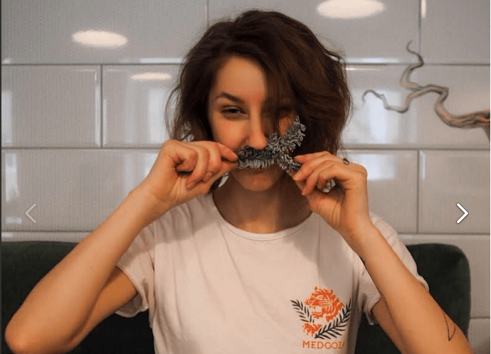

Ставните заболявания не са присъда. Личен опит: победих ревматоидния артрит въпреки всички прогнози.
Здравейте, казвам се Ани и съм на 31 години. Преди повече от шест години ми поставиха диагноза - ревматоиден артрит.

Да, проблемите със ставите не са само при старите хора. В рисковата зона сме всички ние, независимо от възрастта и пола.
Днес всички знаят за рака, ХИВ, СПИН... за това, че човечеството е в постоянно търсене на лекарство за тяхното пълно излекуване. Но за диагноза като ревматоиден артрит, уви, рядко говорят. И не търсят лекарства. Въпреки, че всеки болен от RA знае, че е невъзможно да се отървем от болестта напълно. Е, поне така казват «лекарите».
И да предположа с какво е свързано това «мълчание». Вече съществува лек за РА. Намерих го и го изпробвах върху себе си.
Сега лекарите, които срещнах през годините си на страдание, с недоумение вдигат рамене: станало е чудо - няма как по друг начин! Ревматоидният артрит не се лекува! Момиче, вашият случай е феномен, трябва да влезете в Института, «за да Ви изследват».
Шокирам учените още повече: не съм само аз, ние сме хиляди. Излекуваха се не само «безнадеждно» болните от артрит. Огромен брой хора с различни дегенеративни ставни заболявания се върнаха към пълноценен активен живот. Но всичко това по реда си.
И така, както казах, всичко започна преди шест години.
Първото неприятно «звънче» беше сутрешната скованост в ръцете. Лекарите казаха, че: работата на компютъра е виновна за това.
По-късно започнаха да ме болят не само ръцете, но и краката. Ставането от леглото се превърна в ежедневно мъчение – първите 20-40 минути след събуждането бяха кошмарни. Болките в ръцете ми стигнаха дотам, че вече не можех да се облека сама, докато болкоуспокояващите лекарства не започнат да действат.
Лекарските прегледи и резултатите от изследванията в крайна сметка ме доведоха до ревматолога. Един възрастен доктор настояваше на своето: «Скъпа, обличай се по-топло и не си измисляй. Нямате никакъв ревматоиден артрит». Две години по-късно отново бях на среща с тази баба и тя призна грешката си: «Понякога и това се случва».
Такива лекари – не са един и два. Повярвайте ми, аз съм опитен пациент на ревматолозите, в тази медицинска област цари пълна профанация. Имах късмет, че попаднах на професионалист. Но преди да се случи това, хиляди пъти чух пословичното: «Артритът не се лекува. Научете се да живеете с него».
«Какви са тези глупости?! Вие не се лекувайте».
Аз съм само на 25! Млада съм и имам много планове. Реших на всяка цена да намеря лекарство, което да ми върне пълноценния живот.

Малко преди да се разболея от РА, напуснах старата си работа и станах бариста. Обичах тази професия. Вече имах готов бизнес план за следващите няколко години. Но отчаянието се обхващаше все по-често. Всеки път, когато свършвах работата, се връщах към това, че не мога да вдигна чашката от масата. Просто нямам достатъчно физическа сила, за да продължа да правя това, което обичам.
Мечтата ми ще се сбъдне!

Днес се събуждам всеки ден в 6 часа сутринта (без болкоуспокояващи) и отивам да работя в своето любимо кафене «Choco Bean». Сама, с голямо удоволствие (без болка), приготвям напитки за своите клиенти. И дори сама прибирам чашките. И не само тях!
Да, както беше казано по-горе, имах късмет да срещна добър лекар. Чаках на опашката за преглед три месеца. За да се избегне многократното увеличаване на броя на клиентите си, този лекар ме помоли да не споменавам името му в статията. Той е един от малкото, които, противно на замъгленото обществено мнение, твърди: «артритът се лекува!». И подкрепя думите си с хилядите примери от собствената си лекарска практика. Ето Ви, пример, аз съм живото доказателство за това, че РА е излечим.
След като преминах през всички мъки, които тази болест носи, изпитвам голямо състрадание към хората с болни стави. И разбирам, че не всеки ще се окаже «костелив орех», като мен. Колко хора са убедили псевдо-лекарите, че болката вече е неразделна част от живота им? Бързам да Ви спестя необходимостта да чакате месеци на опашка за преглед: излекувах артрита с помощта на капсулите .
Сигурно, сте чували за хондропротекторите. Та на капсули - това е необичаен хондропротектор. За него се говори като за единствения хондропротектор от пето поколение. Той не само предпазва ставите от разрушаване, но допринася за тяхното възстановяване. Осен това, капсулите премахват болките и възпаленията, работейки на принципа на НПВП, при това те са напълно натурален продукт.
В цялата статия се опитах внимателно да заобиколя темата за конспирацията на аптеките. Но това предположение е очевидно: първо, широко разпространената пропаганда - лечението на артрит е само симптоматично. Нас ни «слагат» на болкоуспокояващи и други лекарства, които само облекчават симптомите. И ударът по портфейла ни е най-малкото зло. Какво представляват антиартритните лекарства от аптеката и какви са техните странични ефекти – изпитах върху себе си.
И второ, капсулите е невъзможно да се намерят по аптеките. Нали разбирате защо… Но искам да ви успокоя. Моят лекар сподели линк към официалния сайт на производителя, от където той купува лекарството за своите клиенти. Капсулите стават за лекуване на широк спектър на ставни болести: от артрит, остеоартрит до временни травми.
ПоръчайЗнам от първа ръка, колко се ценни думите за подкрепа, когато сте в ежедневна борба със собственото си тяло. И колко е важно да не губиш надежда. Затова искам да обобщя историята си с напътствия – никога не се предавайте. Не вярвайте на това, което Ви казват, въпреки популярността на това мнение. Вървете към целта си, вярвайте в доброто и не се отказвайте.
А когато стигнете до успеха, подайте ръка за помощ на другите.
Смятам, че мисията ми е изпълнена.😊
Коментари:
Преди няколко дни бях в «Choco Bean», там е страхотно. Късмет и сила!Ани:
Много благодаря!
Всичко това се отнася за мен, едно към едно. Борих се с РА 13 години, започнах да взимам хормони 10 години след като ми поставиха диагнозата. Е, какво, че си влоших здравето ... Но и аз не седях със скръстени ръце. Изучих цялата литература в интернет относно РА, бях във всички форуми по РА. Не се надявайте на лекарите. Само след като проучих въпроса сама, успях да стигна до истината. Знам, Ани, за кого говориш! 😊 Но, след като нашият скъп приятел иска да е анонимен - няма да го назова. И аз се лекувах при този ревматолог. И да, аз също се излекувах с .Ани:
Лидия,това заболяване те прринуждава да се опознаеш. Браво на Вас!
На такива хора като героинята на тази история им се възхищават. Ние, хората без ужасната диагноза,постоянно се притесняваме за някакви дребни неща, късаме си душата за глупости, забравяйки, че най-важното е здравето.
Героинята от тази историята е невероятна! Аз нямам артрит — имам артроза, която се ппояви преди 18 години заради постоянното претоварване, свързано с професията ми (аз съм музикант). И аз също се опитах да се лекувам — но според мен от това нещата само се влошиха: първо, също ми поставиха грешна диагноза, а след ми правиха инжекции с хиалуронова киселина в ставата. Сега разбирам колко неоправдано беше това — в моя случай не си струваше. В резултат на това през последните две години нямаше ден, в който ставата да не ме боли. Не мога да си сгъна ръката, не мога да се опра на нея, изобщо не мога да правя много неща, дори и в ежедневието. Ужасно демотивиращо е. И най-страшното е, че преди да се разболея, си мислех, че болестите, които не се лекуват са само рака и СПИН. Оказва се, че много хора страдат от проблеми със ставите, връзките, сухожилията — и се оказва, че има решение на проблема! Ани, много Ви благодаря! Поръчах си
. Сигурно, Вие ме спасихте. Сигурно знаете какво са ръцете за един пианист и колко е важно здравето на ставите. Ще се лекувам!Ани:
Заповядайте! Много здраве Ви желая)
Преди една година ми сложиха диагноза "ревматоиден артрит". Оттогава много неща научих за това заболяване и продължавам да изучавам проблема. Много Ви благодаря за статията, вдъхновението и !
Ани, майка ми също се лекуваше при Васил Ш. ))) 10 години страда от ишиас. я спаси, вече втора година буквално «лети» и не си спомня за болестта…Ани:
Шшшш! Е, човекът нали помоли да не споменавате името му)) Много здраве на майка Ви!